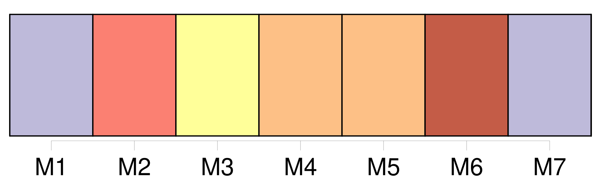
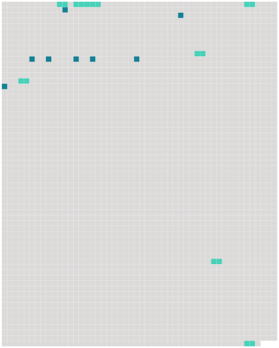

Longueur nb maillons : 15 mentions |
 |
Et, pendant l'étude, les pincements sournois de [Juliette Force] , [une grande de dix ans] , chargée d'apprendre l'alphabet aux dernières venues. [1 phrases]
ces pincements qui lui faisaient fermer les yeux sous la douleur, tandis que [la méchante] disait : Devant la nouvelle réprimande, Églantine Lumière rouvrait les yeux, et des larmes s'en échappaient sans que son petit visage fit la moindre grimace ; mais sa gorge serrée ne pouvait laisser passer les sons, et c'était tout bas, avec une bouche tremblante, qu'elle répétait les mots après celle qui la pinçait à la fin de la leçon, comme [elle] l'avait pincée au commencement. [14 phrases] Le lendemain, la mère de Juliette Force vint se plaindre à Mlle Charmes que gnangnan avait fait mordre [sa fille] par son chien.
Inquiète, la maîtresse appela les deux fillettes : [Juliette] fit voir [sa] main droite, puis la gauche.
[Elle] ne se souvenait plus bien, mais ni l'une ni l'autre de ses mains ne portait trace de morsure. [11 phrases] À ses brusques reculs, et à ses violents sursauts elle devina les pincements sournois de [Juliette Force] [2 phrases]
Et, comme une fois de plus [Juliette] se plaignait du mauvais vouloir de gnangnan, la maîtresse, d'un ton fâché, dit : [76 phrases] Elle lui savait gré seulement de ne plus l'appeler gnangnan, et de l'avoir séparée de [Juliette Force] [40 phrases] Celles -ci riaient au lieu de pleurer, comme elle l'avait fait elle -même au temps de [Juliette Force] |
 |
Il est possible de télécharger la ressource sur la page Ortolang |
Si vous avez des questions ou vous voyez des erreurs, merci d'envoyer un mail à silvia.federzoni89@gmail.com |